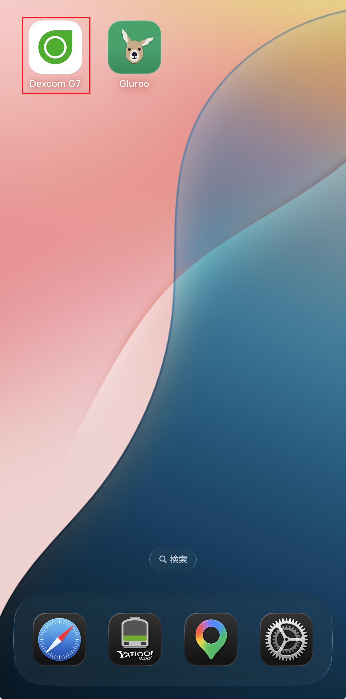
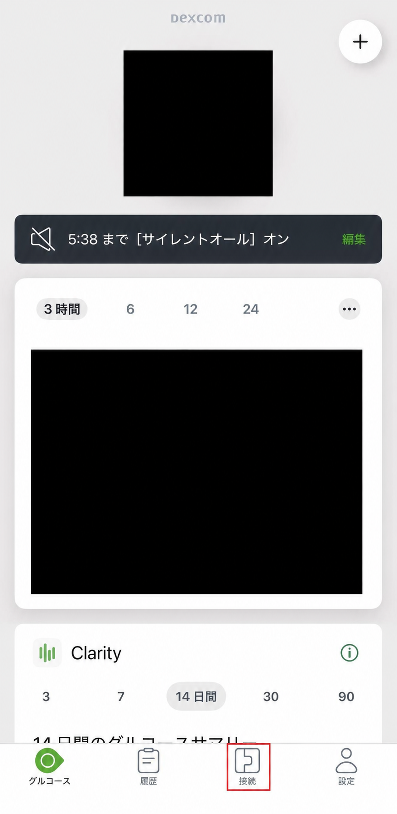
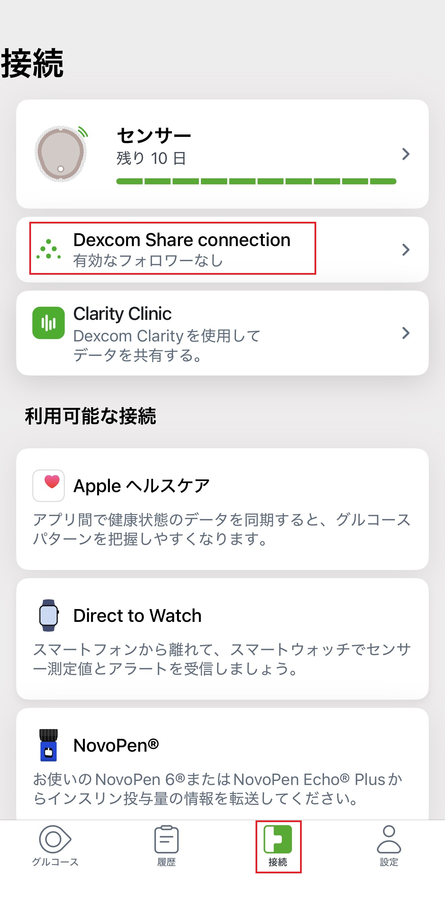
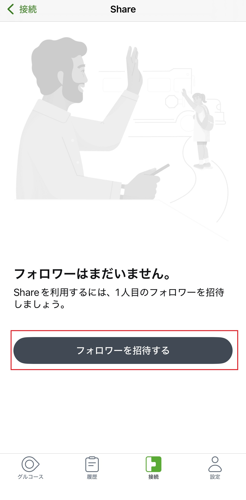
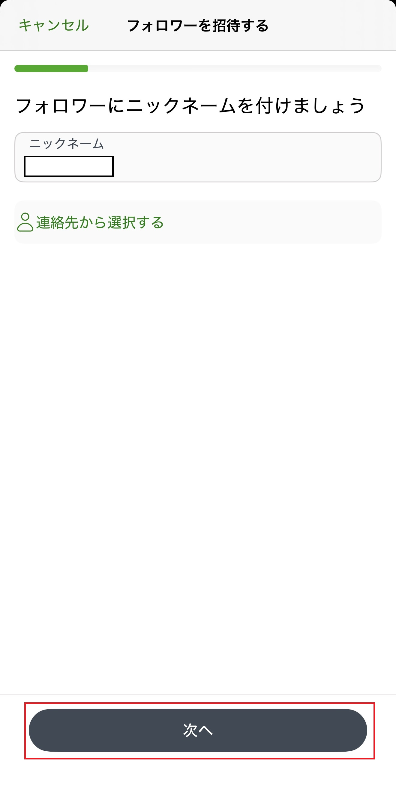
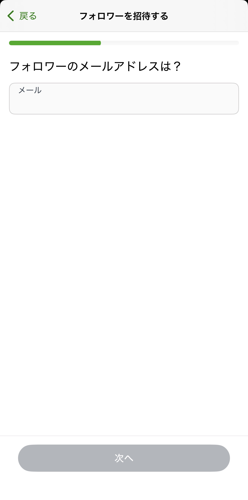
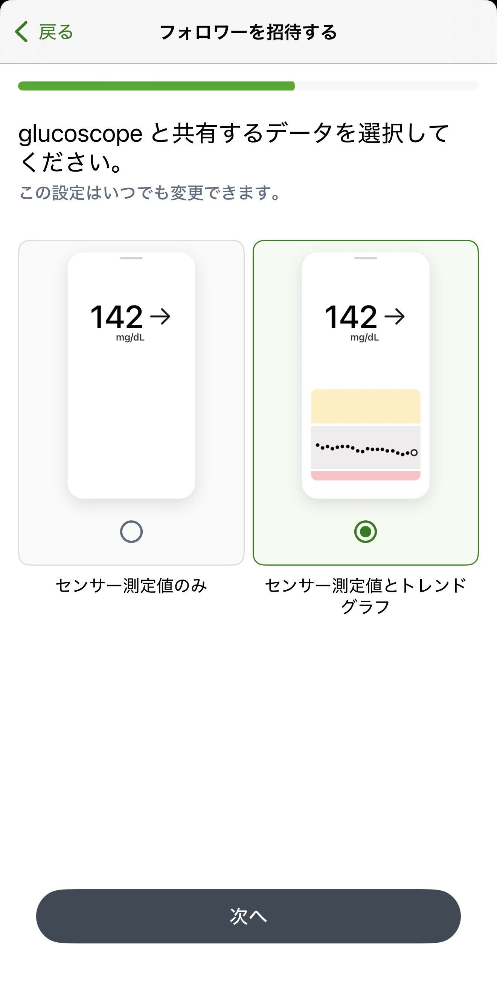
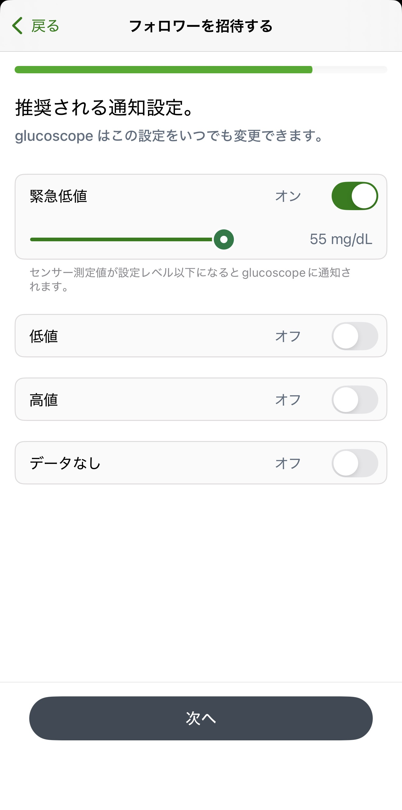
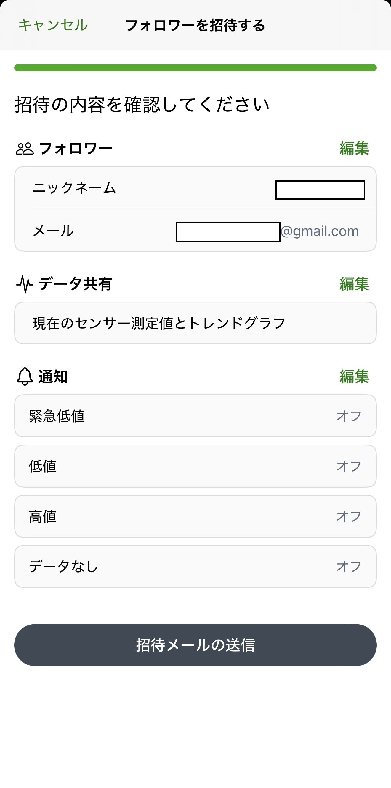
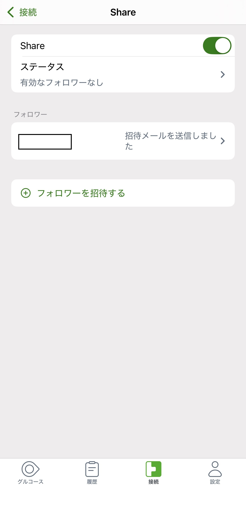

Dexcom G7を使っている方
Dexcom Shareを
1画面ずつ準備します
Dexcom G7アプリのShareをオンにして、フォロワーを1人招待します。画面の順番どおりに進めれば大丈夫です。
先に用意するもの
- 血糖値が表示されているDexcom G7アプリ
- 招待を受け取って承諾できる人のメールアドレス
- Dexcom G7を使っている本人側のDexcomユーザーIDとパスワード
本人側のDexcomユーザーIDとパスワードをあとで入力する場所はGlurooです。GlucoScopeへDexcomのパスワードを入力することはありません。
ユーザーIDは、Dexcom G7アプリの「プロフィール → アカウント」で確認できる場合があります。パスワードが分からないときは、Dexcomの正規の再設定を使います。
画面が少し違っても大丈夫です
アプリの更新により、言葉やボタンの場所が変わることがあります。画像とまったく同じでなくても、各STEPの「押すところ」と近い名前を探してください。
画像内の血糖値やグラフは撮影時の例で、目標値や医療上の案内ではありません。氏名とメールアドレスは公開用に隠しています。
この手順の流れ
第1章 · Dexcom G7を使っている本人のスマホ
Shareの招待を送ります
Dexcom G7を開きます
iPhoneのホーム画面で、白地に緑のマークがあるDexcom G7アプリを探します。

下の「接続」を開きます
現在の血糖値が表示されるホーム画面で、下部メニューの「接続」を押します。
この画面では、公開に不要な血糖値とグラフを隠しています。下の「接続」だけを探してください。

「Dexcom Share connection」を開きます
接続の一覧から、緑の点が並んだ「Dexcom Share connection」を探します。
「有効なフォロワーなし」は、まだ招待が承諾されていない状態です。エラーではありません。

フォロワーの招待を始めます
「フォロワーはまだいません。」と表示されたら、招待の作成へ進みます。

フォロワーのニックネームを入力します
招待を受ける人を自分が分かる名前で入力します。本名でなくてもかまいません。

招待先のメールアドレスを入力します
招待を受け取って承諾できる人のメールアドレスを入力します。入力間違いがないか確認します。

共有するデータを選びます
Glurooでグラフも表示するため、「センサー測定値とトレンドグラフ」を選びます。
説明イラスト内の「142 mg/dL」は例で、あなたの血糖値ではありません。

フォロワーの通知設定を確認します
表示される通知設定を確認します。GlucoScopeのために通知値やオン・オフを変更する必要はありません。
画像例とご自身の画面でオン・オフが違っても問題ありません。通知は治療判断の代わりではなく、ご自身のDexcomの案内に沿って設定します。

招待内容を確認して送ります
ニックネーム、メール、共有データ、通知を確認します。間違いがあれば各項目の「編集」で戻れます。
この最終確認画面に表示される内容が、実際に送られる設定です。

「招待メールを送信しました」を確認します
招待した人が一覧に表示されたら、本人側の送信操作は完了です。
まだ「有効なフォロワーなし」でもエラーではありません。相手が招待を承諾すると有効になります。

第2章 · 招待を受ける人
メールの招待を承諾してもらいます
ここは招待を受ける人の操作です
- 招待先のメールを開きます。見つからない場合は迷惑メールも確認します。
- メールの案内に沿って、Dexcom Followで招待を承諾します。
- 本人側のDexcom G7で「有効なフォロワー」が表示されるまで待ちます。
招待を受ける側の画面は、端末やDexcom Followの利用状況で異なるため、メールに表示されるDexcomの案内に沿ってください。
第3章
Glurooへ戻ります
有効なフォロワーが確認できたら準備完了です🍀
- Glurooを開きます。
- 「メニュー → 設定 → CGM」を開きます。
- 「Dexcom G7」を選びます。
- Dexcom G7を使っている本人側（Sharer）のユーザーIDとパスワードをGlurooへ入力します。
- Glurooに血糖値が表示されるまで待ちます。
フォロワー側のログイン情報ではありません。DexcomのユーザーIDは、メールアドレス・携帯電話番号・作成時のユーザー名のいずれかの場合があります。分からない場合はDexcomの正規の再設定を使います。
GlurooガイドのSTEP 22へ進む血糖値が表示されないとき
- 元のDexcom G7アプリに最新の血糖値が見えるか
- Shareがオンになっているか
- 招待先がメールを開いて承諾し、「有効なフォロワー」が表示されたか
- Glurooへ入力したのが本人側（Sharer）のユーザーIDとパスワードか